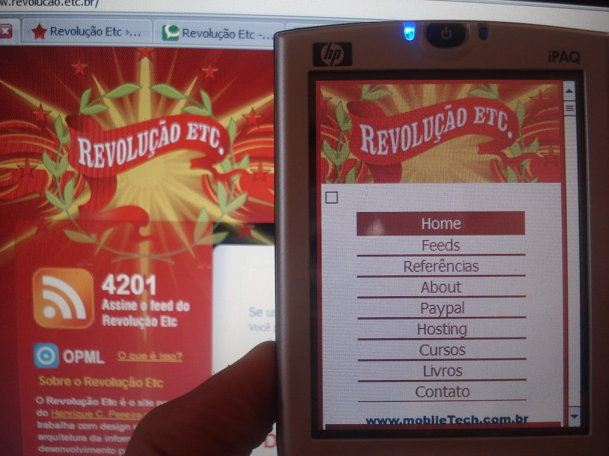

Sobre o autor:
 Me chamo Henrique costa Pereira, sou de uberlândia/MG. Iniciei minha carreira na área de produtos digitais ainda na era dos "web masters", onde o foco era tanto no design quanto na programação. Trabalhei com WordPress, PHP e ASP.NET, explorando as ferramentas e tecnologias emergentes no início dos anos 2000 até o início dos anos 2010. Essa fase foi fundamental para desenvolver minhas habilidades e conhecimentos sobre web em geral.
Com o tempo, comecei a blogar sobre padrões web e acessibilidade, temas que ganhavam cada vez mais importância. Minha participação ativa na comunidade online me levou às primeiras cinco edições da Campus Party Brasil, um evento que reúne entusiastas de tecnologia de todo o mundo.
Fui convidado pela Intel Processadores para cobrir a primeira Campus Party Brasil como blogueiro de tecnologia. Esse convite foi um reconhecimento importante da minha influência na área, marcando um momento significativo na minha trajetória profissional.
Ao longo dos anos, a maneira como meu trabalho é reconhecido mudou, passando de "blogueiro" para "influencer". Essa mudança reflete a evolução do consumo de conteúdo digital e a forma como as informações são compartilhadas na internet. Continuo comprometido em oferecer conteúdo relevante e informativo para o público.
Um momento marcante foi em 2007, quando recebi uma edição especial da caixa do Windows 7, personalizada com minha foto e a logomarca do meu blog, sendo um dos dez blogueiros no Brasil a receber tal distinção. Esse reconhecimento foi um incentivo para continuar me dedicando ao mundo digital, buscando sempre aprender e compartilhar novidades.